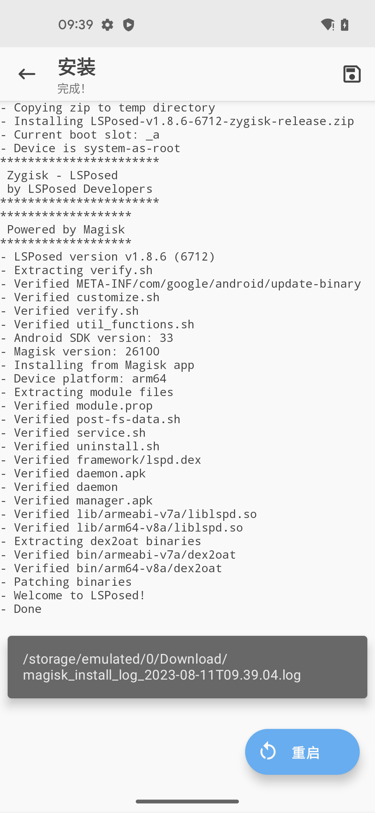

LSPosed相关日志
LSPosed安装过程日志
期间可以点击保存按钮，保存出log日志文件：

再去把log日志导出上传到电脑端：
➜ LSPosed adb pull /sdcard/Download/magisk_install_log_2023-08-11T09.39.04.log .
/sdcard/Download/magisk_install_log_2023-08-11T09.39.04.log: 1 file pulled, 0 skipped. 0.7 MB/s (4527 bytes in 0.006s)
查看到内容是：
magisk_install_log_2023-08-11T09.39.04.log
- Copying zip to temp directory
- Installing LSPosed-v1.8.6-6712-zygisk-release.zip
- Current boot slot: _a
- Device is system-as-root
Archive: /data/user/0/com.topjohnwu.magisk/cache/flash/install.zip
inflating: module.prop
***********************
Zygisk - LSPosed
by LSPosed Developers
***********************
Archive: /data/user/0/com.topjohnwu.magisk/cache/flash/install.zip
inflating: customize.sh
*******************
Powered by Magisk
*******************
Archive: /data/user/0/com.topjohnwu.magisk/cache/flash/install.zip
inflating: verify.sh
Archive: /data/user/0/com.topjohnwu.magisk/cache/flash/install.zip
creating: META-INF/com/google/android/
inflating: META-INF/com/google/android/update-binary.sha256
inflating: META-INF/com/google/android/updater-script.sha256
inflating: META-INF/com/google/android/update-binary
inflating: META-INF/com/google/android/updater-script
- LSPosed version v1.8.6 (6712)
- Extracting verify.sh
Archive: /data/user/0/com.topjohnwu.magisk/cache/flash/install.zip
inflating: customize.sh
Archive: /data/user/0/com.topjohnwu.magisk/cache/flash/install.zip
inflating: customize.sh.sha256
- Verified META-INF/com/google/android/update-binary
Archive: /data/user/0/com.topjohnwu.magisk/cache/flash/install.zip
inflating: verify.sh
Archive: /data/user/0/com.topjohnwu.magisk/cache/flash/install.zip
inflating: verify.sh.sha256
Archive: /data/user/0/com.topjohnwu.magisk/cache/flash/install.zip
inflating: util_functions.sh
- Verified customize.sh
- Verified verify.sh
Archive: /data/user/0/com.topjohnwu.magisk/cache/flash/install.zip
inflating: util_functions.sh.sha256
- Verified util_functions.sh
- Android SDK version: 33
- Magisk version: 26100
- Installing from Magisk app
- Device platform: arm64
- Extracting module files
Archive: /data/user/0/com.topjohnwu.magisk/cache/flash/install.zip
inflating: module.prop
Archive: /data/user/0/com.topjohnwu.magisk/cache/flash/install.zip
inflating: module.prop.sha256
Archive: /data/user/0/com.topjohnwu.magisk/cache/flash/install.zip
inflating: post-fs-data.sh
- Verified module.prop
Archive: /data/user/0/com.topjohnwu.magisk/cache/flash/install.zip
inflating: post-fs-data.sh.sha256
Archive: /data/user/0/com.topjohnwu.magisk/cache/flash/install.zip
inflating: service.sh
Archive: /data/user/0/com.topjohnwu.magisk/cache/flash/install.zip
inflating: service.sh.sha256
- Verified post-fs-data.sh
Archive: /data/user/0/com.topjohnwu.magisk/cache/flash/install.zip
inflating: uninstall.sh
Archive: /data/user/0/com.topjohnwu.magisk/cache/flash/install.zip
inflating: uninstall.sh.sha256
- Verified service.sh
- Verified uninstall.sh
Archive: /data/user/0/com.topjohnwu.magisk/cache/flash/install.zip
inflating: framework/lspd.dex
Archive: /data/user/0/com.topjohnwu.magisk/cache/flash/install.zip
inflating: framework/lspd.dex.sha256
- Verified framework/lspd.dex
Archive: /data/user/0/com.topjohnwu.magisk/cache/flash/install.zip
inflating: daemon.apk
Archive: /data/user/0/com.topjohnwu.magisk/cache/flash/install.zip
inflating: daemon.apk.sha256
- Verified daemon.apk
Archive: /data/user/0/com.topjohnwu.magisk/cache/flash/install.zip
inflating: daemon
Archive: /data/user/0/com.topjohnwu.magisk/cache/flash/install.zip
inflating: daemon.sha256
- Verified daemon
Archive: /data/user/0/com.topjohnwu.magisk/cache/flash/install.zip
inflating: manager.apk
Archive: /data/user/0/com.topjohnwu.magisk/cache/flash/install.zip
inflating: manager.apk.sha256
- Verified manager.apk
Archive: /data/user/0/com.topjohnwu.magisk/cache/flash/install.zip
inflating: liblspd.so
Archive: /data/user/0/com.topjohnwu.magisk/cache/flash/install.zip
inflating: liblspd.so.sha256
- Verified lib/armeabi-v7a/liblspd.so
Archive: /data/user/0/com.topjohnwu.magisk/cache/flash/install.zip
inflating: liblspd.so
Archive: /data/user/0/com.topjohnwu.magisk/cache/flash/install.zip
inflating: liblspd.so.sha256
- Verified lib/arm64-v8a/liblspd.so
- Extracting dex2oat binaries
Archive: /data/user/0/com.topjohnwu.magisk/cache/flash/install.zip
inflating: dex2oat
Archive: /data/user/0/com.topjohnwu.magisk/cache/flash/install.zip
inflating: dex2oat.sha256
- Verified bin/armeabi-v7a/dex2oat
Archive: /data/user/0/com.topjohnwu.magisk/cache/flash/install.zip
inflating: dex2oat
Archive: /data/user/0/com.topjohnwu.magisk/cache/flash/install.zip
inflating: dex2oat.sha256
- Verified bin/arm64-v8a/dex2oat
- Patching binaries
- Welcome to LSPosed!
- Done
供参考。
Magisk启动日志带LSPosed
Magisk重启后，相关日志中，能看到LSPosed字样：
zygisk_lsposed: exec [service.sh]
也去点击保存按钮，保存出日志文件：

导出日志文件：
➜ LSPosed adb pull /sdcard/Download/magisk_log_2023-08-11T09.40.15.log .
/sdcard/Download/magisk_log_2023-08-11T09.40.15.log: 1 file pulled, 0 skipped. 11.3 MB/s (96550 bytes in 0.008s)
可以看到：log日志内容很多。
此处只摘录相关的核心日志：
---Magisk Logs---
26.1 (26100)
03-18 05:03:44.576 964 964 I : Magisk 26.1(26100) daemon started
03-18 05:03:44.578 964 964 I : * Device API level: 33
03-18 05:03:44.587 964 966 I : ** post-fs-data mode running
03-18 05:03:44.587 964 966 I : * Mounting mirrors
03-18 05:03:44.625 964 966 I : * Initializing Magisk environment
03-18 05:03:44.638 964 966 I : * Running post-fs-data.d scripts
03-18 05:03:44.641 964 966 I : Upgrade / New module: zygisk_lsposed
03-18 05:03:44.641 964 966 I : * Running module post-fs-data scripts
03-18 05:03:44.642 974 974 I : zygisk_lsposed: exec [post-fs-data.sh]
03-18 05:03:44.658 964 966 I : * Loading modules
08-11 09:39:34.139 964 966 I : ** late_start service mode running
08-11 09:39:34.139 964 966 I : * Running service.d scripts
08-11 09:39:34.141 964 966 I : * Running module service scripts
08-11 09:39:34.143 964 966 I : zygisk_lsposed: exec [service.sh]
08-11 09:39:34.255 1015 1015 I : zygisk64: replaced com/android/internal/os/Zygote#nativeForkAndSpecialize
08-11 09:39:34.255 1015 1015 I : zygisk64: replaced com/android/internal/os/Zygote#nativeForkSystemServer
08-11 09:39:34.255 1015 1015 I : zygisk64: replaced com/android/internal/os/Zygote#nativeSpecializeAppProcess
08-11 09:39:34.554 1016 1016 I : zygisk32: replaced com/android/internal/os/Zygote#nativeForkAndSpecialize
08-11 09:39:34.554 1016 1016 I : zygisk32: replaced com/android/internal/os/Zygote#nativeForkSystemServer
08-11 09:39:34.554 1016 1016 I : zygisk32: replaced com/android/internal/os/Zygote#nativeSpecializeAppProcess
08-11 09:39:36.110 964 966 I : denylist: initializing internal data structures
08-11 09:39:47.041 964 966 I : ** boot-complete triggered
供参考。